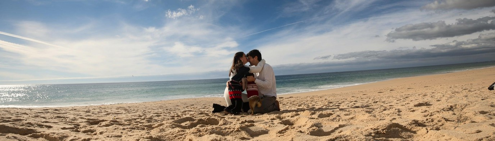
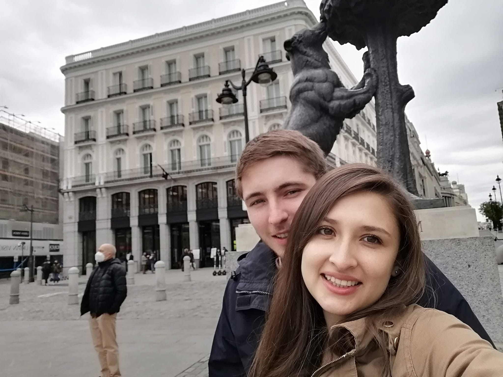
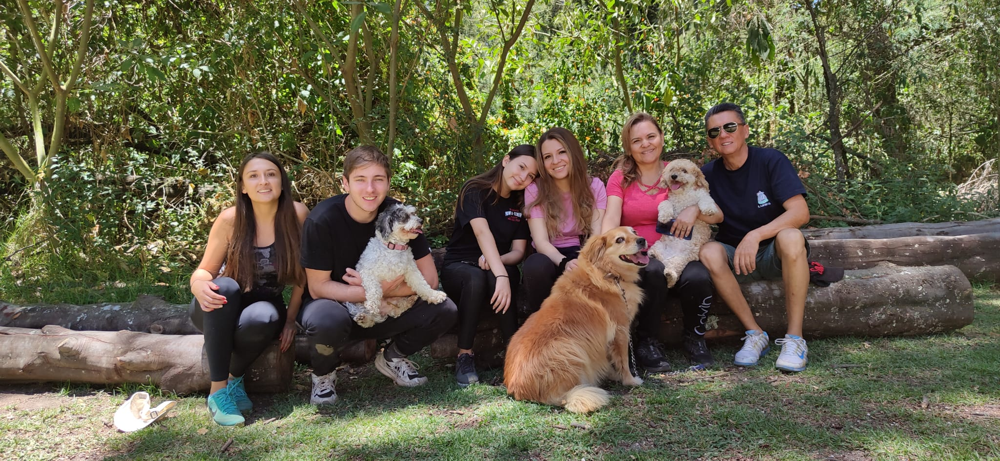
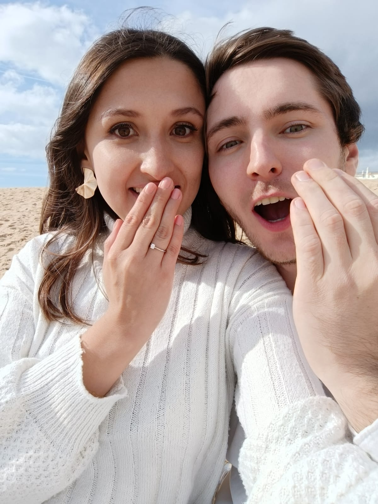
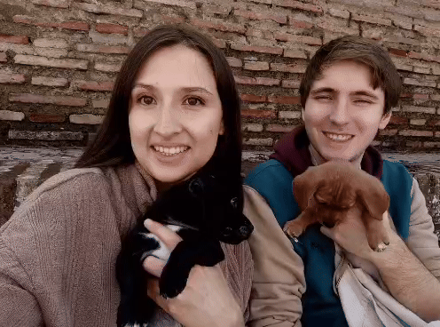

Nathalya & Pierre
- Class
- Première, avec amour
- Date
- 14 · 08 · 2027
- From
- Europe
- To
- Équateur
No.
140827
Fare
Un oui
Nathalya & Pierre

Certaines histoires ne sont pas faites pour s'arrêter avec l'été.
Départ dans
Il y a des voyages qui ont une destination. Et des voyages qui finissent par devenir une vie.
2019 · Quito
Tout commence à Quito. Deux vies, deux pays, une rencontre qui change tout.
2021 · Madrid
Madrid devient notre point de repère, entre rires, balades et projets qui se dessinent.

2023 · Équateur
Retour en Équateur, cette fois pour rencontrer la famille de Nathalya.

2023 · Séville
On pose nos valises en Andalousie. Une nouvelle aventure commence.
2025 · Algarve
Au bord de l'océan, la question est posée… et la réponse est oui.

14 · 08 · 2027

Depuis 2024, ils font partie de chaque voyage. Ils vous attendent aussi.
Samedi 14 août 2027, Quito
La cérémonie

Le cocktail et la fête
Pas de dress code : venez comme vous vous sentez bien. L'important, c'est que vous soyez là.
Réponse souhaitée avant le 31 mai 2027
Une question ? Écrivez-nous
La France de Pierre, notre Espagne, l'Équateur de Nathalya
Faites tourner le globe du doigt. Touchez l'Équateur pour voir nos lieux préférés.
Vous venez de loin : restez quelques jours de plus. Voici nos lieux préférés. Touchez-en un pour le voir sur la carte.
La carte n'a pas pu se charger. La liste reste disponible.
Tout pour arriver jusqu'à nous
Des vols directs relient Madrid à Quito, en 11 h environ.
En général une escale, par Madrid ou Amsterdam. Comptez 14 à 16 h de trajet.
Aéroport international Mariscal Sucre (UIO), à environ 45 min du centre de Quito. En août, il est 7 h de moins qu'en France et en Espagne.
Cérémonie à 15:00 à l'église de Guápulo, puis cocktail à 17:00 à Il Casale, sur l'avenue Oswaldo Guayasamín. Nous préciserons ici comment aller de l'une à l'autre.
Notre sélection d'hôtels arrive bientôt.
[Hôtels conseillés]
Conseils officiels, à relire avant de partir : France Diplomatie Ministerio de Asuntos Exteriores
Il n'y a pas de dress code. Venez comme vous vous sentez bien.
Oui, les enfants sont les bienvenus.
En espagnol et en français.
La cérémonie est à 15:00 à l'église de Guápulo, le cocktail à 17:00 à Il Casale. Les détails pour s'y rendre seront dans l'onglet « Voyage ».
Votre présence, après un si long voyage, est déjà le plus beau des cadeaux. Une cagnotte sera ouverte pour ceux qui le souhaitent.
Oui, prenez-en autant que vous voulez, et partagez-les avec #NathalyaEtPierre2027.